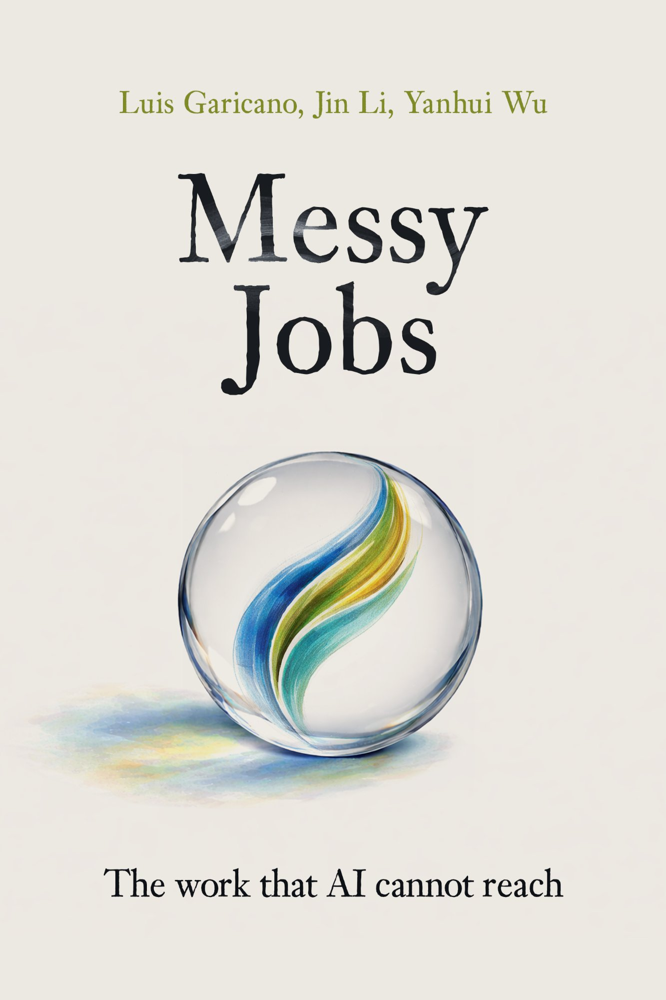

The Work that AI Cannot Reach

From the Authors
Imagine you wake up to a message from your AI agent: “Good news. I changed your internet provider and cut your bill by 10 percent. I also found, booked, and paid for a summer house that fits your needs.” Now think about what happens next. You may live with a partner who has already changed the plans you agreed on last night, or with flatmates who didn’t do the dishes, or with children who have decided this morning that they are not going to their swimming lessons anymore. In all cases you are the manager of a tiny, fast-moving organization — deciding how to allocate scarce resources, figuring out the division of labor, and negotiating agreements. The bottleneck is not information. It is the politics of the household: making sure decisions are acceptable to everyone and implemented. Your family life, like everyone else’s, can be a mess.
All knowledge work varies along the same dimension: messiness. On one end, there is one defined task to execute — you get the payslips via email, use rules to fill out a form, and get a result. On the other end, there is a wide bundle of complex tasks: running a factory, or a family, involves work that is very hard to specify in advance and full of conflict. Along the messiness spectrum, AI has a different ability to help or replace humans. While it is easy for AI to replace simple, clean tasks, it is hard for it to replace messy jobs.
In February 2026, the head of Microsoft’s AI division told the Financial Times that most white-collar tasks could be “fully automated by an AI within the next 12 to 18 months.” We believe these predictions are wrong. Not because we believe AI is weak. But because the people making the predictions do not understand what most white-collar workers do all day.
The future is not shaped by technology alone. Understanding the consequences of AI requires economic reasoning about scarcity, about complementarities and bottlenecks, about signaling and incentives, and about the organization of work. These are the concepts we use. Our specific examples will age — these concepts will not.
Read the full preface →Inside the Book
Part One
What does AI actually automate — and what does it leave behind? These five chapters map the terrain, from the autonomy threshold to the jobs that survive precisely because they cannot be decomposed into clean tasks.
Part Two
Why do humans still matter — and which humans matter most? From authority and coordination to the economics of authenticity, these three chapters identify the structural sources of irreplaceable human value.
Part Three
How should organisations adapt? From the collapse of hiring signals to the broken career ladder, these four chapters provide a practical framework for managers, workers, and institutions navigating the transition.
Get the Book
“The world is not running out of problems that need solutions.
If you bring judgment, determination, and the willingness to be held responsible for unpredictable outcomes — you will not be replaced.
You will be needed more than ever.”